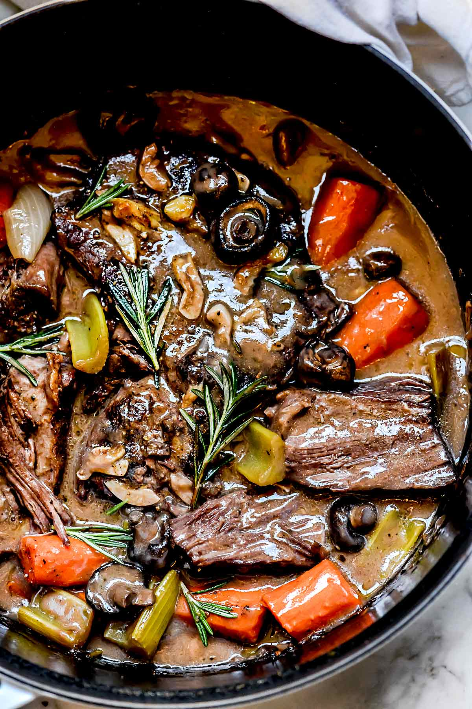

Pot Roast

Description
A great winter meal to enjoy any time of year. I am Martha Stewart.
Gets better over time. I just finished all the pot roast I had and now I'm sad.
Ingredients
- 2-3 lb beef pot roast
- Better than Bouillon beef base
- Dry red wine
- Baby carrots
- Onion
- 1 box of white mushrooms
- 1 large can of whole tomatoes
- 3-5 russet potatoes peeled, cut up into 1-2 inch cubes
- Fresh ground black peppercorn
- Dried thyme
- 3 bay leaves
- Water
- Vegetable or canola oil
Steps
- Trim beef of any tough looking fat.
- Cover a plate with all purpose flour and crack a bunch of black pepper into the flour.
- Dredge the meat into the flour, covering all surfaces.
- Heat 2-3 tbs of vegetable or canola oil in large soup pot.
- Brown the beef in the hot oil on all sides.
- Turn the meat to get it nice and browned all over.
- Remove meat and put back on plate to rest.
- Scrape up the bits in the pan. Remove only burnt bits, leave rest for flavor.
- Add a bit more oil and add about 1 1⁄2 cup of coarsely chopped up onions.
- Add about 2 cups of baby carrots and sautee in oil, stirring occasionally till browned.
- Add 1 box of cleaned mushrooms chopped in half.
- Sautee vegetables.
- Add 2 crushed garlic cloves and continue to sautee the vegetables together for about 10 minutes on low-medium heat.
- Place roast on top of vegetables.
- Add 1 large can of whole tomatoes and 1 1⁄2 cups of red wine.
- Add 3 cups of water to cover the roast and 4 tsp of beef bouillon paste.
- Add crushed black pepper and bay leaves.
- Simmer on low heat for about 3-4 hours until the meat is fork tender.
- In the last hour add peeled, quartered potatoes. Cook until fork tender.
- Serve with crusty french bread and salad.
Home